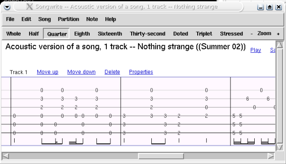
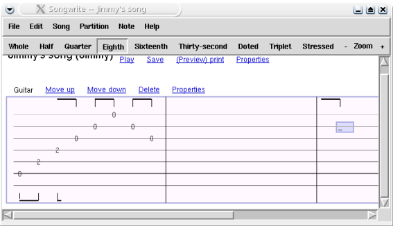
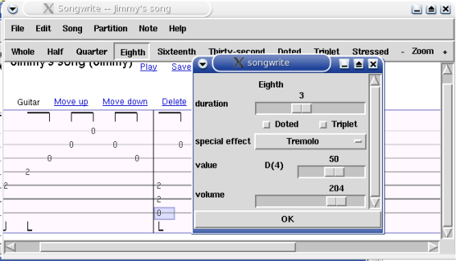
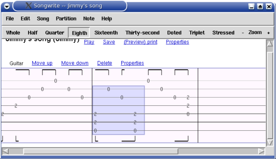

Songs in the Key of Tux: Songwrite
Hello and welcome to Songs in the Key of Tux. Over the next few issues I hope to introduce some of the many packages available under Linux for musicians. The topics I intend to cover include guitar tablature (this article), music typesetting, sound recording with home studio software such as Ardour and Ecasound, and creating electronic music with some of the various synthesisers around.
If you have any questions or suggestions, please feel free to e-mail me, but please bear in mind that I use a dial-up connection, and pay by the minute - so please don't send me sound files without clearing it with me first. If you think I haven't covered something in enough detail, I'll be happy to go over it again - everything in this series is open to suggestion, including the name (I was going to go with Tux#, but that might have confused Mono/.Net fans).
Songwrite
As well as a being a computer fanatic, I'm also a guitarist. In a recent lull between bands, I decided to start learning music theory; or at least, enough to create my own tablature. A friend introduced me to GuitarPro on Windows, which I still need to use for Internet access (Winmodem), and using it I eventually managed to learn enough of the basics to create my own tablature.
I wasn't satisfied with this however, and searched in vain for a suitable Linux-based program. At first I tried KGuitar, but it wouldn't compile for me, and the only binaries I found lacked MIDI support; I'm still learning, so I need to hear a playback of almost everything I enter to make sure it's right.
I saw Songwrite mentioned a few times, but was put off using it by the screen shots available on the program's website; Songwrite is based on GTablature, but the author didn't appreciate the API changes of GNOME 2, and rewrote GTablature using Tk, and renamed it Songwrite. I find Tk intolerably ugly, and try to avoid it whenever possible, but I was tempted into giving Songwrite a try after seeing how far the program has come in the past year.
Guitar Tablature
Guitar tablature is the lingua franca of rock guitarists; many are self-taught, or received only basic instruction, and do not read music. Tablature shows the fingering layout of a song, and is therefore easier for guitarists to understand. Most of the tablature available on the Internet shows just the fingering for a song, in ASCII text. For example, an E minor arpeggio looks like this:
e|-----------------0--------| B|--------------0-----0-----| G|-----------0-----------0--| D|--------2-----------------| A|-----2--------------------| E|--0-----------------------|
However, in the past few years, several programs have become available which allow guitarists with some knowledge of music theory to have their songs played back to them on the computer, removing the ambiguities of plain text, and the need for guitarists who can't read sheet music to own the CD. It was only a matter of time before Linux guitarists would feel the need themselves, and create software of their own.
Songwrite is one of the few tablature programs available for Linux, and despite its' early version (I'm using version 0.12), it is quite capable. Among its features are:
- MIDI import/export
- Printing (using Lilypond)
- GuitarPro 3/4 Import
- Multiple tracks
- ASCII import/export
- XML file format
- Songbook support
Songwrite does have its limitations though; for example it can only support x/4 and x/8 rhythms (though in practise this isn't much of a problem), it has no support for harmonics, and though it supports string bends, it doesn't support releasing the bend, or whammy bar type bends. Songwrite is under active development though, and important new features are being added with each release, so it will hopefully only be a matter of time before it matches the software for Windows; perhaps even beat them - none of those programs can handle non-standard harmonics; but Songwrite's interface means it won't have to undergo any major overhaul to add this support.
GuitarPro support
GuitarPro is the most popular of the Windows-based tablature programs, and several sites, such as MySongBook.com, have been set up so that people can share their favourite tabs with one another, and other Windows programs support the format. Supporting GuitarPro's format is therefore very important to anyone who wishes to make the transition from Windows, or to gain access to the thousands of pre-made tabs available in this format.
Having previously tried a pre-release version of KGuitar, I didn't have high hopes for Songwrite's GuitarPro import. There are several problems; it can't handle non-standard note durations (though it does support triplets), its recognition of repeated bars and linked notes is hit and miss, it doesn't recognise tempo changes and it has difficulty importing complicated tabs. Some of the features it lacks are not a problem when it comes to GuitarPro import, however; though it has limited support for non standard time signatures, it still manages to play back simple files without a problem.
Getting started
When you first run Songwrite, you are faced with a blank screen. Entering notes is as simple as with other programs: you click the line representing the string you wish to enter upon, and type in the number of the fret. To play it back, simply hit the space bar.
Entering chords is just as easy; and as a bonus over other programs, Songwrite can copy and paste any combination of notes and chords, rather than just individual bars. You simply select the area of music you wish to copy, and middle-click to paste. This also allows you to place chord fragments on other string groups.
Another feature unique to Songwrite is the ability to enter notes at any point in a bar; in other tablature programs you would have to enter rests before the next note. This is useful if you are transcribing music and aren't sure which chord or note is being played, or if the music starts late in the bar - lead fills and vocal harmonies can be entered much more quickly with this feature.
Things to watch out for
When pasting, click on the highest string used in the chord. For example, if you wish to paste a G5 chord as a C5 chord, then you should click on the G string. If you click lower, Songwrite will add extra strings to your fret layout.
e|-----------|
B|-----------|
G|--------5--|
D|--5-----5--|
A|--5-----3--|
E|--3--------|
G5 C5
If you try to do something Songwrite doesn't support, it may end up as part of your file. I've had it add strange rhythms to files, thinking that the change had simply rejected. If you get an error message, use the Undo function, and check to see if anything noticable has changed.
The competition
Songwrite has only two main competitors at the moment (though there are several programs to help with the preparation of simple ASCII tabs) - KGuitar and Gnometab. KGuitar is possibly the best option for guitarists new to music theory; the most recent version added the ability to click the rhythm of a riff with the mouse button - KGuitar then attempts to figure out the note durations and time signature. I can't comment on how well this feature works, however, as I still can't get it to compile. From the version I have tried, however, I can say that the chord tool is wonderful.
I haven't tried out Gnometab, so I can't comment on it; though I can say that it has the best looking interface of any of the tablature programs I've seen.
Examples
For the more adventurous types who may be interested in using songwrite, I'm attaching a tarball of GuitarPro files. A lot of them don't import, but I have confidence in the development of Songwrite, so I'm including them to "future-proof" this article. For the time being, however, I've also included midi files, so you'll know what they should sound like in the meantime. [examples.tar.gz]
Links
Jimmy has been using computers from the tender age of seven, when his father
inherited an Amstrad PCW8256. After a few brief flirtations with an Atari ST
and numerous versions of DOS and Windows, Jimmy was introduced to Linux in 1998
and hasn't looked back.
In his spare time, Jimmy likes to play guitar and read: not at the same time,
but the picks make handy bookmarks.
![[BIO]](../gx/2004/authors/oregan.jpg) Jimmy is a single father of one, who enjoys long walks... Oh, right.
Jimmy is a single father of one, who enjoys long walks... Oh, right.